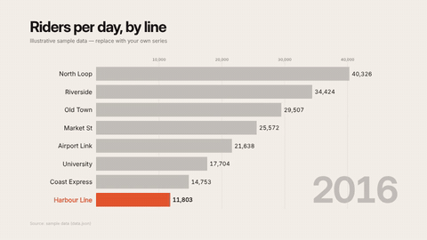
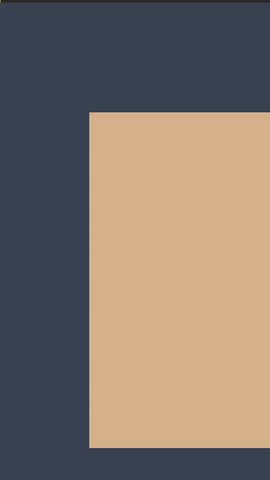
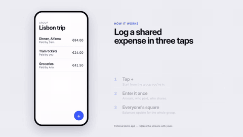
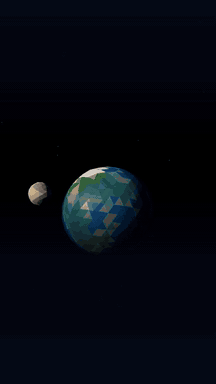

bar-race
Animated data chart — bar-chart race (16:9): ranked bars that re-order over periods, axis that rescales, period counter, source line, closing callout. Data in data.json (series × periods) or ?data=.
scaffold.mjs bar-race my-project1920×1080 · 14s
base
base
Minimal 2D DOM composition skeleton (render contract, master timeline, labels).
scaffold.mjs base my-project1920×1080 · 6s

captions-social
Social graphics overlay (transparent, any aspect): word-timed captions (word · highlight · karaoke · pop · box) from words.json in per-platform safe zones, optional hook title for the first seconds and a progress bar. Render with --formats alpha or prores; social-edit.mjs drives it.
scaffold.mjs captions-social my-project1080×1920 · 8s
gsap
gsap
Logo/product reveal on a master timeline; uses GSAP when vendored, falls back to the MF engine (same API).
scaffold.mjs gsap my-project1920×1080 · 5s · needs gsap
kinetic-type
Editorial kinetic typography: masked word/line reveals, variable-weight serif, rule-led grid, hold + resolve.
scaffold.mjs kinetic-type my-project1920×1080 · 10s
lower-thirds
lower-thirds
Lower-thirds pack (16:9, transparent): styles bar · card · minimal (data.json `style` or ?style=). Render with --formats alpha,mp4 for a VP9-alpha overlay; a footage stand-in plate shows only in preview/stills.
scaffold.mjs lower-thirds my-project1920×1080 · 7s
promo
Multi-format, data-driven promo (16:9 · 9:16 · 1:1 · 4:5 from one file): headline → 3 claims → end card. Brand kit, captions, beat sync, CSV batch.
scaffold.mjs promo my-project1920×1080 · 12s
social-916
social-916
9:16 social clip: safe-zone layout, three-beat stacked claim, progress spine, end card.
scaffold.mjs social-916 my-project1080×1920 · 8s
threejs
threejs
Three.js scene (instanced monoliths, directed dolly/crane camera, fog, tone mapping). Needs local `three`.
scaffold.mjs threejs my-project1920×1080 · 8s · needs three

ui-walkthrough
UI / app walkthrough (16:9): phone frame with built-in HTML screens, tap indicator that finds its targets, screen transitions, numbered step callouts. Swap the screens for your app's UI; step copy in data.json.
scaffold.mjs ui-walkthrough my-project1920×1080 · 14s
webgl
webgl
Raw WebGL2 fragment-shader scene (no deps): deterministic procedural contour field + DOM type overlay.
scaffold.mjs webgl my-project1920×1080 · 8s

whatif-3d
9:16 'What if…?' science reel: low-poly Three.js planet + moon, hook → event → 3 consequence cards → follow card. Content in data.json. Needs local `three`.
scaffold.mjs whatif-3d my-project1080×1920 · 15s · needs three